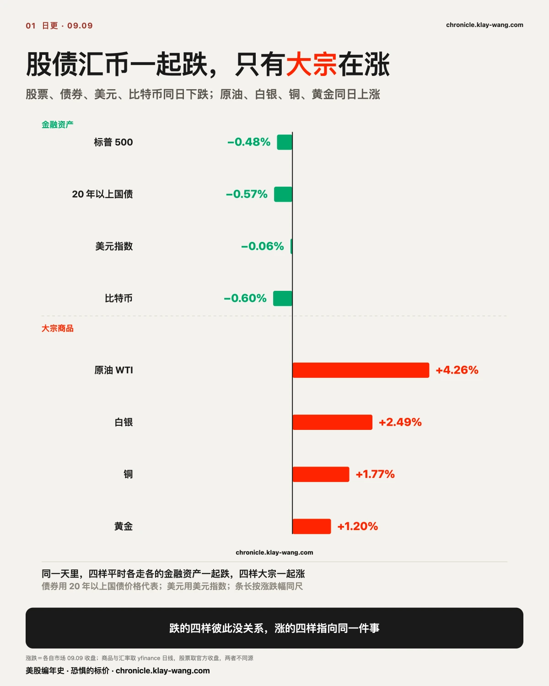
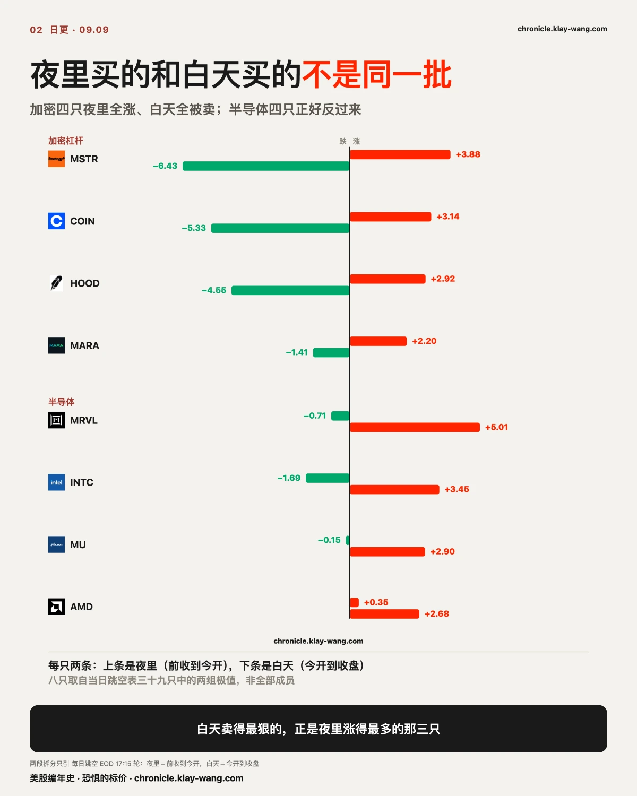
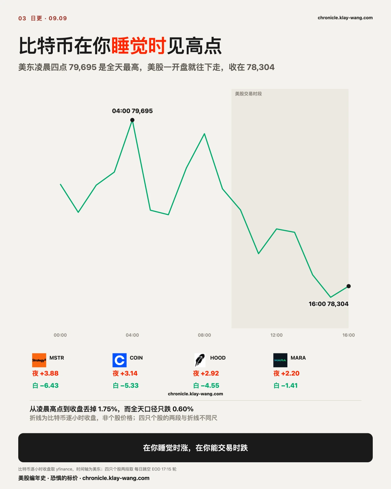
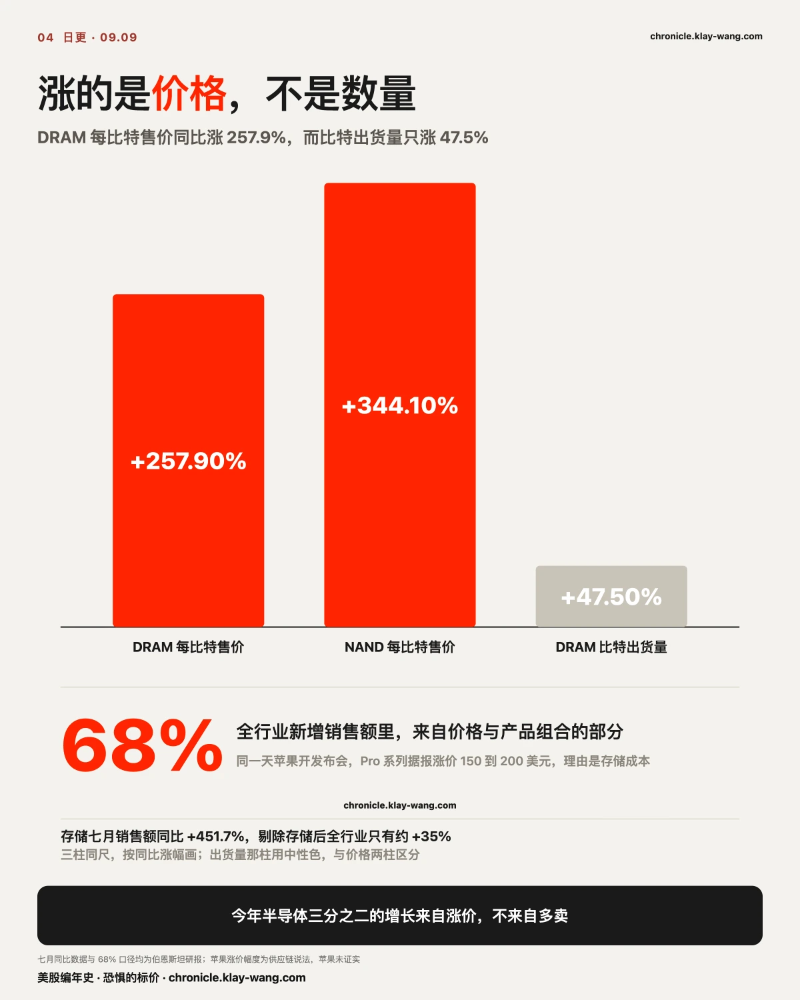
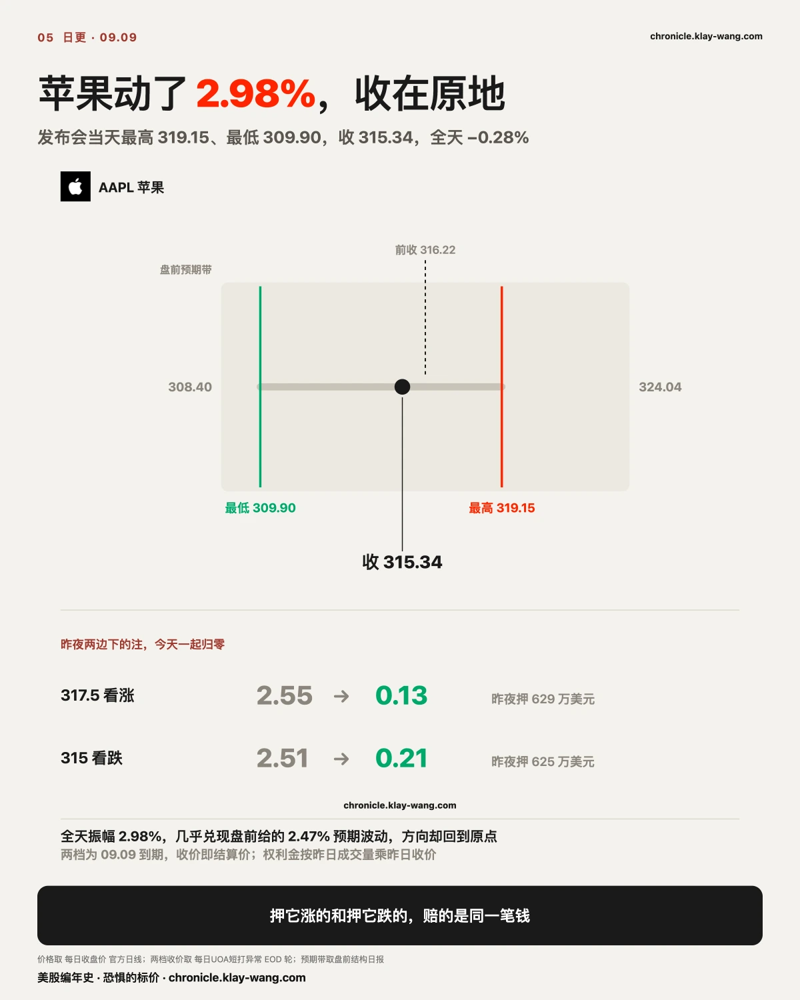
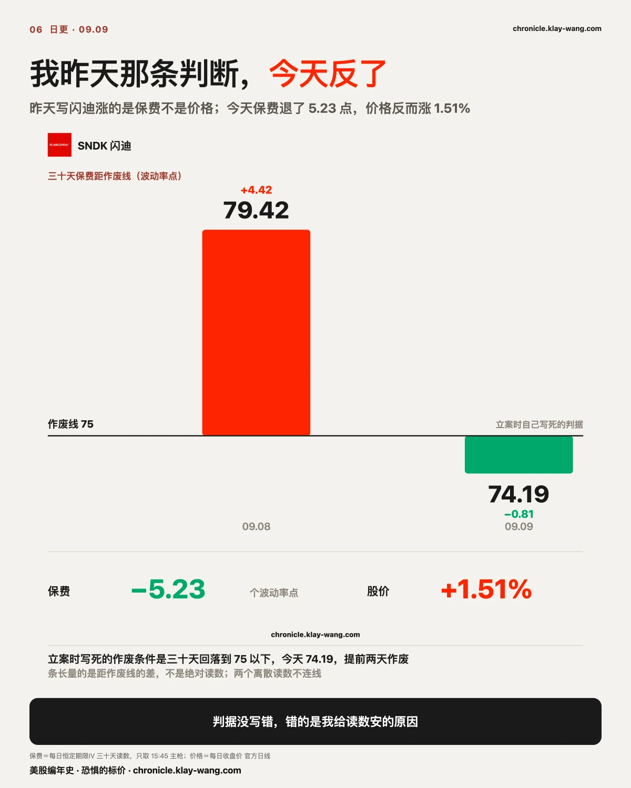
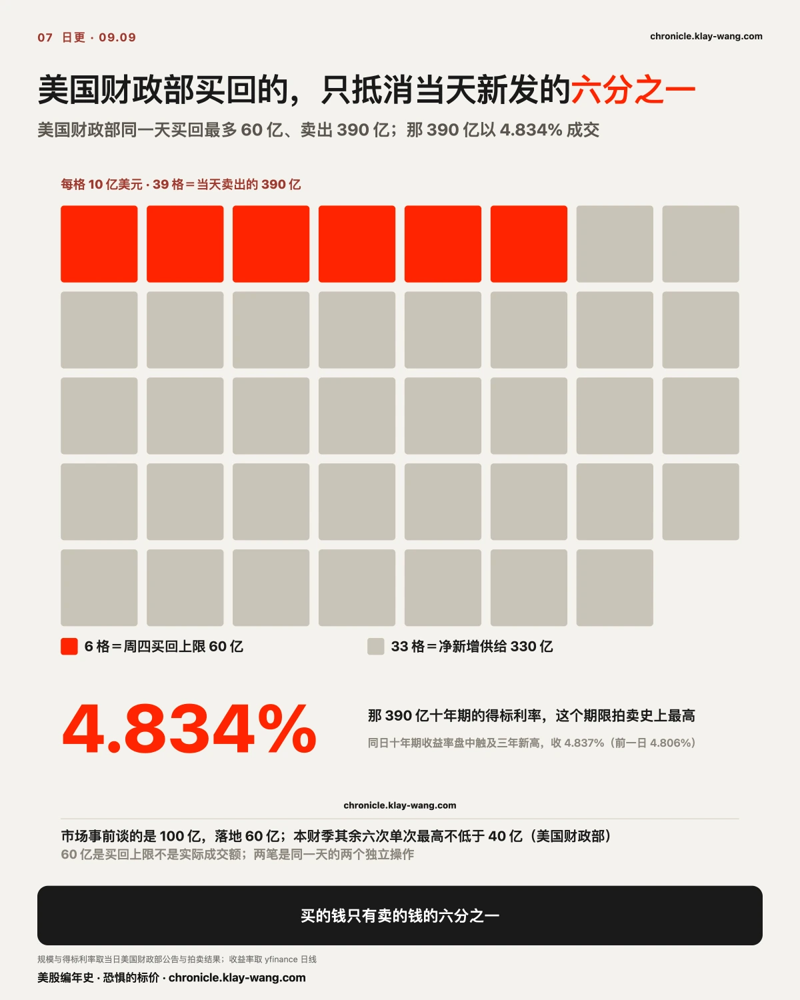
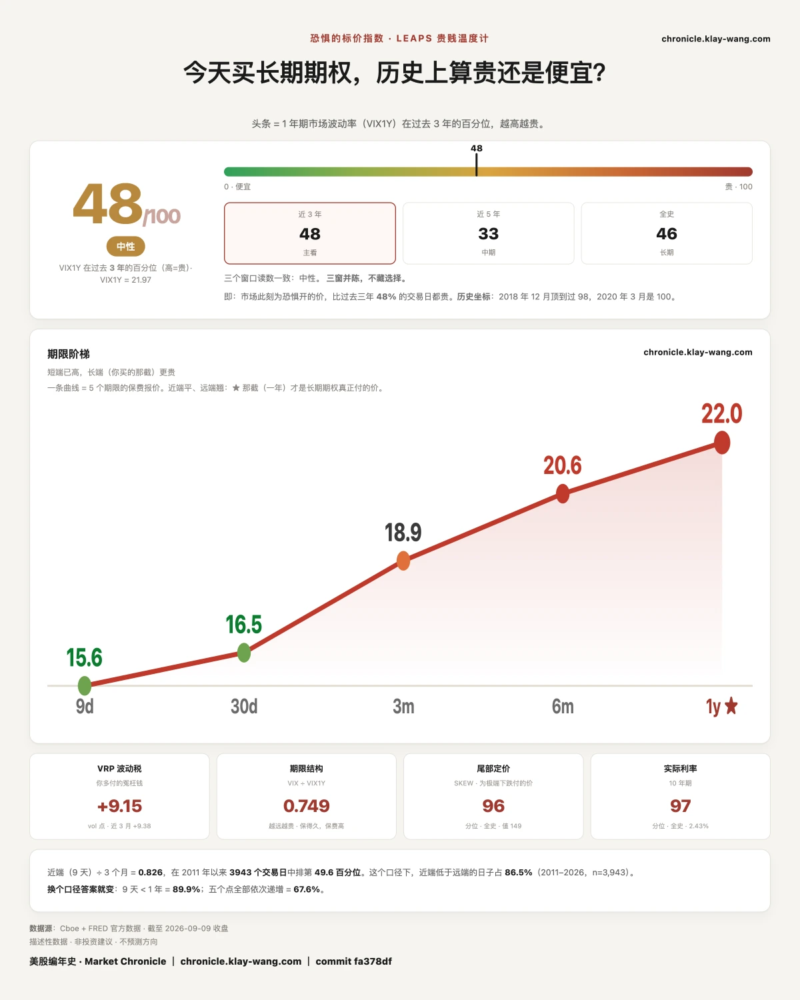

跳空表把每一只的涨跌拆成两段：夜里（前收到今开）和白天（今开到收盘）。三十九只拆完，形状很干净。
夜里涨得最多的五只：Meta +5.73%、MicroStrategy +3.88%、Coinbase +3.14%、Robinhood +2.92%、Marathon +2.20%。除了 Meta 是自己发了产品，其余四只全是加密货币的杠杆敞口。
白天涨得最多的五只：迈威尔 +5.01%、GameStop +4.14%、英特尔 +3.45%、美光 +2.90%、AMD +2.68%。除了 GameStop，其余四只全是半导体。
白天跌得最多的五只：MicroStrategy −6.43%、Coinbase −5.33%、Robinhood −4.55%、IonQ −3.47%、SpaceX −2.95%。
第三行和第一行是同一批票。夜里被抬起来的那三只，白天被卖掉的比抬起来的还多。

为什么是这四只，比特币自己的路径说得最清楚：全天高点 79,695 出现在美东凌晨四点，美股一开盘就往下走，收盘 78,304。比特币全天只跌 0.60%，而 MicroStrategy 光白天那一段就跌 6.43%。夜里那三个点是在美股没开盘的时候给的，美股一开门就收了回去。

一篇伯恩斯坦的半导体月度销售点评写的是存储量价齐升。它做的事很简单：把七月全球半导体销售额拆成价格和数量两部分，然后告诉你哪一部分在涨。
七月全球半导体销售额同比增长 131.4%。存储芯片同比 +451.7%，剔除存储之后全行业只有约 +35%。拆开来看：DRAM 的每比特平均售价同比涨 257.9%，NAND 每比特涨 344.1%，而 DRAM 的比特出货量只涨 47.5%。
今年前七个月，存储给全行业贡献了约 3,550 亿美元的新增销售额，其中价格与产品组合的变化贡献了约 3,060 亿，相当于全行业新增销售额的 68%。
半导体行业今年三分之二的增长来自涨价，不来自多卖。
同一天，苹果开发布会。供应链的说法是 Pro 系列涨价 150 到 200 美元，理由写着内存与存储成本大幅上升。上游的芯片涨价，下游的手机跟着涨价，中间隔了大约一年。
把这条链拉直，会看到三层价格，而且三层的方向今天并不一致。
第一层在芯片。DRAM 每比特涨 257.9%，出货只涨 47.5%，两个数字之间的差就是纯涨价。TrendForce 给 2026 年服务器 DRAM 合约价的累计涨幅是约 270%，企业级固态硬盘约 235%，并预计 DRAM 与 NAND 占云厂商资本开支的比例从 2026 年的 47% 升到 2027 年的 68%。这一层今天还在往上走。
第二层在终端。苹果那 150 到 200 美元是这条链上第一个可以对账的下游数字。它要回答的问题只有一个：上游的涨价有多少真能转嫁出去。转嫁得动，涨价就变成收入；转嫁不动，涨价就变成别人的毛利率。
第三层在保险。给这些票的波动定价的钱今天在往回退：闪迪的三十天保费从 79.42 掉到 74.19。上游在涨价、下游在涨价，而愿意为它们的波动付钱的人今天要价更低了。三层里两层朝上一层朝下，这个分歧比任何一层单独的读数都值钱。

昨天盘后我们记下过一件事：苹果今天到期的合约里，317.5 看涨押了 629 万，315 看跌押了 625 万，两边金额几乎一样。那种下注买的是会动，不是往哪动。
今天它动了。最高 319.15，最低 309.90，全天振幅 2.98%，几乎兑现了盘前给的 2.47% 预期波动。
但它收在 315.34，全天 −0.28%。
317.5 看涨从 2.55 跌到 0.13，315 看跌从 2.51 跌到 0.21。两边一起归零。 押它会涨的人和押它会跌的人，今天赔的是同一笔钱。
今天到期那一层全天成交了 6,732 万的期权权利金，是昨天的两倍，最大的三档全是实值看涨的日内来回。发布会当天的钱在盘中进出，没有人愿意把它留过夜。

昨天这里量过动量这台发动机的转速：用 08.07 到 08.28 的涨跌把二十一只票分成强势组和弱势组，强减弱，建仓期领先 12.18 个百分点，上一周收窄到 2.25，本周反过来落后 1.66。昨天我还写了一句：历史上动量因子见顶回落之后，很少一个月就重启。
今天换个问法：这台发动机会不会重新点火。这件事得从五个维度看，缺一个都会看偏。
季节性。 九月中旬之后，动量资金历来偏强。这不是说历史一定重复，它的意义在于时间窗口：过了九月中，动量策略重新活跃的概率在上升。
风格表现。 动量因子相对标普 500 的比值，七月那轮明显回撤之后，近期开始有抬头迹象。这一点比个股反弹重要得多。如果只是半导体的票在涨，那可能只是行业内部修复；如果整个因子相对大盘也走强，说明市场风格在往追强那一侧切回去。
价格结构。 美光、闪迪、存储 ETF、韩国 ETF，这些和半导体链高度相关的方向，在一段收敛震荡之后，同一时间集体突破了收敛三角。一只票突破是个股事件。一条链上四个方向同时出现同一种结构，钱买的就是整条主线。
风险定价。 半导体波动率指标从七月的约 65 降到 36，几乎腰斩，回到年初附近。此前市场怕它继续暴跌，所以不敢追；波动率降下来、价格又开始突破，重新参与这条主线的成本和心理压力都在下降。
资金行为，这一条最重要。 对冲基金总杠杆在八月出现断崖式下降，短线资金在九月宏观不确定的背景下提前降了风险敞口。最近这个杠杆开始小幅回升。意思是该降的那一轮已经降完，如果宏观压力不继续恶化，它们是有空间重新加回来的。
五个维度指向同一件事：AI 硬件和半导体可能正在重新抬头。但不能就此说动量资金已经全面重启，九月还有通胀数据和联储会议，宏观变量仍然压着估值上限。接下来三件事逐日跟，今天先看第一天。
动量因子今天没能跑赢标普：差值从 −1.66 走到 −2.60，当天再落后 0.87。
半导体今天强过软件：半导体 ETF +0.10%，软件 ETF −0.81%，差 0.91 个百分点。
存储链站住了那个突破：美光 +2.75%、闪迪 +1.51%、西部数据 +1.73%、海力士的美国存托凭证 +7.05%、韩国 ETF +0.46%，没有一只回吐。
没走出来的是第一件，而它可以拆开。弱势组今天涨 0.74%，把 Meta 一只剔掉，弱势组变成 −0.23%，动量差从 −0.87 变成 +0.10。 今天动量差恶化的那 0.87 个百分点，几乎全部是 Meta 一只造成的，而 Meta 涨的是它自己发的产品，跟半导体没有关系。
板块内部已经在动，动量因子那一层还没转过来。今天挡在它前面的是弱势组里那只涨了 6.55% 的公司股，半导体这边并没有掉队。
接下来三个交易日，如果 Meta 不再单只主导弱势组，而动量差仍然不收窄，这个读法就不成立。
昨天这里写过一条：闪迪今天涨的是保费，不是价格。当时股价 −0.12%，而三十天恒定期限波动率从 73.05 抬到 79.42。立案时写死的作废条件是：如果 09.11 之前三十天读数回落到 75 以下，本判断作废。
今天它是 74.19。提前两天作废。
比作废更难看的是方向：保费退了 5.23 个点，而股价涨了 1.51%。 完整反过来。
错在哪一步说得清楚：把一个长周末之后的一次性补价，读成了对路况的重新定价。三天假期之后开盘，卖保险的人要把三天的时间价值一次性收回来，这是日历造成的，不是判断造成的。判据当时写对了，读数当时也没错，错的是我给那个读数安的原因。

苹果那条成立，见上。英特尔只答了一半。收 106.24，站住了 100。另一半要看 09.18 到期的 100 看涨持仓有没有减少，这个数今天还取不到：两个数据源的持仓相差一个结算周期，今天读到的还是昨天那个。能看见的是成交量塌了，09.18 的 100 看涨今天只成交 2,520 张，昨天是 18,047 张，钱移到 110 看涨那一档，26,264 张、741 万。成交量说那一档不再是战场，持仓有没有真的减少，明早才见分晓。
特斯拉09.09到期的 360 看跌归零，收 367.81。上周五那 26,469 张、2,528 万，全没了。
五档期限那条保留：一年期 21.97 站在 21.7 之上，读法改成两头都抬。
财政部的回购，三个读数都说债市没动，可债市今天动了。
今天 11:00 公布周四回购最多 60 亿美元，市场事前谈论的数字是 100 亿。事前定好的三个读数：规模落在 50 到 60 亿之内，TLT 收 81.73 落在盘前标好的 81.54 到 82.86 带子里，MOVE 从 76.14 只动到 76.74。三个都指向同一句话，债市当天没有重新定价。
但它们看的那一面，不是今天出事的那一面。
同一天下午，财政部拍卖 390 亿美元十年期国债，得标利率 4.834%，是这个期限拍卖史上最高；十年期收益率盘中触及三年新高，收在 4.837%，前一日是 4.806%。
按期限摊开，形状很清楚。短端几乎没动：一到三年国债 ETF −0.02%。中段在跌：七到十年 −0.36%。长端跌得多一点：二十年以上 −0.57%。收益率那一侧同向：五年抬 4.1 个基点，十年抬 3.1，三十年只抬 2.2。动的是中段，不是两端。
而那三个读数里，TLT 只盯二十年以上，MOVE 只答波动贵不贵。今天真正被重新定价的是十年期那张券，两个都够不着它。
保险那一侧也没喊，MOVE 只动 0.60。利率的波动没有变贵，债市今天的动作是供给问题，不是风险问题。
判据没写错，是写窄了：盯住了长端和波动率，漏掉了当天真正被定价的那张券。这和上午那次是同一族的错，一个钉在时点上，一个钉在标的上，判据钉在哪里，就只在哪里开奖，钉不到的地方它一个字都不会替你说。

昨天谷歌11.20到期的 370 看涨和 440 看涨各成交了约 2.8 万张。今天拿到结算持仓：370 那档增加 27,509 张，440 那档增加 27,507 张。成交量差了 588 张，净留仓只差 2 张。
张数相等是价差组合的结构要求，两笔独立下注碰不出这个数。这是一个买 370、卖 440 的看涨价差。
净支出约 2,538 万美元，每股净成本 8.96，保本线 378.96。谷歌今天收 330.65，到11.20之前要涨 14.8% 才回本，要涨 33.2% 才拿满收益。
卖掉 440 那条腿，等于自己承认不认为它能涨三成。 这是一笔押涨、但把上限亲手封住的钱。而下注的第二天，谷歌跌了 2.28%，是今天七巨头里最弱的一只，还跌出了盘前标好的预期带下沿。
恐惧的标价指数（Fear-Price Index）· 2026-09-09 · 读数 47.6/100：一年期波动率 VIX1Y 为 21.97，处于近三年第 47.6 百分位，高即贵。逐日台账与口径 → chronicle.klay-wang.com · 转载注明：恐惧的标价指数 · Fear-Price
一年期波动率今天 21.97，三年分位从 43.0 抬到 47.6。五档期限自09.04以来：九天 11.97 到 15.59，三十天 15.30 到 16.46，三个月 17.61 到 18.87，六个月 19.89 到 20.63，一年 21.49 到 21.97。
五档全抬，近端抬得远比远端多。 九天那档抬了 3.62，一年期只抬了 0.48。短期的怕在涨价，长期的怕跟着抬了一点点。VIX 与一年期的比值从 0.722 升到 0.749。石油那边今天说的是同一句话：布伦特 +4.16% 重新站上 100，而近端紧、远端松的形状，和这条期限阶梯是一个方向。
09.04那条判断说，被加价的是一年之后。今天按判据保留并改写：两头都在抬，只是近端抬得更快。
